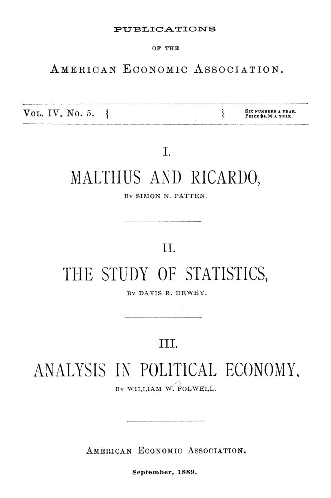

Malthus, Ricardo e os números: três lições de método
Leitura: 8 min
Patten explica por que Malthus e Ricardo não se entendiam, Dewey propõe ensinar estatística como laboratório e Folwell sustenta que o valor é a última palavra da economia, não a primeira.


Um estudante de Harvard recebeu uma tarefa aparentemente banal: reconstituir as receitas dos Estados Unidos de 1789 a 1886. Logo em 1815, encontrou uma diferença de mais de US$ 300 mil entre o relatório do secretário do Tesouro daquele ano e o Finance Report de 1885. O exercício, aplicado pelo professor Hart, é citado por Davis R. Dewey como prova de que estatística se aprende na bancada, como química.
O relato está numa das três comunicações reunidas no vol. 4, nº 5 das publicações da American Economic Association, de setembro de 1889. Todas foram lidas na terceira reunião anual da associação, em Filadélfia, em 28 e 29 de dezembro de 1888. Os autores são Simon N. Patten, da Wharton School, na Universidade da Pensilvânia; Davis R. Dewey, do Massachusetts Institute of Technology; e William W. Folwell, da Universidade de Minnesota.
Os temas parecem distantes: uma querela sobre a renda da terra no início do século XIX, um programa de exercícios para universitários, uma proposta para reordenar o manual de economia. O fio comum é o método. Patten pergunta por que dois discípulos de Adam Smith chegaram a conclusões opostas. Dewey pergunta como treinar alguém para desconfiar de um número. Folwell pergunta em que ordem ensinar os conceitos. As três respostas apontam para o mesmo lugar: antes da doutrina vêm as premissas, as fontes e a sequência do raciocínio.
Por que Malthus e Ricardo não conseguiam concordar?
Patten parte de uma injustiça de reputação. Adam Smith é lembrado pelo melhor que fez; Malthus e Ricardo, pelo pior. “Malthusiano” e “ricardiano” tinham virado termos de desprezo. Ambos trouxeram más notícias. A lei da população, a tese de que a população tende a crescer até consumir todo aumento de alimentos, punha ao progresso limites que nenhuma reforma política removeria. E uma parte crescente do produto iria, como renda, para os donos de terra.
O atrito está justamente na renda. Ricardo seguia o ensaio de West, que pela primeira vez formulou a lei dos rendimentos decrescentes. A sociedade começaria pelas terras mais férteis; com o crescimento da população, terras piores entrariam em cultivo, e a renda das melhores subiria. É a renda ricardiana: um prêmio pela diferença de fertilidade em relação à margem de cultivo, a pior terra em uso, que não paga renda. Lucros e salários cairiam na mesma medida, e a renda seria mera transferência entre classes. Malthus via o filme ao contrário. A humanidade começou pobre, sem sementes nem ferramentas; a renda surgiu quando melhorias técnicas elevaram a produção acima do necessário para sustentar quem cultivava. Não foi tirada de ninguém: era sinal de produtividade maior.
Patten atribui a divergência ao ambiente de cada um. Malthus vivia no campo e conhecia a agricultura. Ricardo, corretor de valores bem-sucedido em Londres, olhava um acre de terra como olharia uma mina de carvão. Isolava uma causa por fenômeno e a levava às últimas consequências, num raciocínio que Patten chama de geométrico; Malthus enxergava várias causas e preferia casos concretos.
“Um vê a economia de Saturno, enquanto o outro vê a de Marte.” (One sees the economy of Saturn while the other sees that of Mars.)
O veredito surpreende. Patten julga Malthus melhor observador, mas atribui a Ricardo as ideias mais claras sobre a renda. Mundos simplificados são úteis enquanto ninguém os confunde com o real; a confusão, escreve, é culpa dos seguidores.
Como se ensina alguém a desconfiar de um número?
O tema ganhara interesse depois do ensaio de Carroll D. Wright, chefe do Departamento Nacional do Trabalho, sobre estatística nas faculdades, apresentado na reunião de maio de 1887. A disciplina, observa Dewey, era estrangeira: criada na Alemanha, na França ou na Itália e enciclopédica nos manuais de Haushofer e Block. O curso completo só caberia na pós-graduação.
Para a graduação, propõe outra coisa: a estatística como laboratório, subordinada a cursos de história financeira, tarifária e industrial, assim como a bancada fixa o que a aula de química ensina. O aluno deve conferir a dívida pública publicada no American Almanac contra os próprios Finance Reports. Aprende onde procurar em caso de disputa e como reconciliar discrepâncias. Nos relatórios dos bureaus de estatística do trabalho, aprende a distinguir salário real de nominal e a suspeitar de séries que provam, com igual facilidade, que o trabalhador avançou, recuou ou ficou parado.
“Conter os usos desonestos correntes do material estatístico para confusão política.” (check the current dishonest uses of statistical material for political bewilderment)
O método tem três etapas: pesquisa e verificação, tabulação e ilustração gráfica. Na tabulação, uma turma de nove alunos dividida em comitês de três costuma desperdiçar dois ou três formulários antes de chegar a uma forma compacta e exata. Nos gráficos, o risco é o oposto: alunos que fogem de números se encantam com o desenho e roubam tempo do resto do currículo.
Dewey fecha apontando material desperdiçado: relatórios estaduais de saúde, seguros, caridade e prisões, mal tabulados mas ricos, que os americanos deixavam acumular sem uso.
Por onde se deve começar um curso de economia?
Folwell abre com um impasse. Numa conferência de professores de um estado do oeste, ninguém conseguiu propor um programa de economia aceitável para as escolas públicas: admiradores de Carey e Bowen não toleravam os livros de Wayland e Perry. Havia quem dissesse que a matéria nem deveria ser ensinada, por não ser ciência exata.
Sua resposta, apoiada em treze anos de experiência com alunos de graduação, é que a boa análise simplifica a doutrina. Ele separa economia privada de pública e põe o consumo na base: as necessidades humanas são a mola da atividade industrial, e é como consumidor que o homem entra em cena. Daí a crítica a J. S. Mill, cujo modelo inspirava os melhores tratados, por ter ignorado o consumo como ramo fundamental.
As consequências são práticas. Na produção, os agentes primários são dois, natureza e homem; o capital é resultado, a parte do produto reservada para produzir mais. A terra trabalhada, de um canteiro a uma fazenda, entra como capital, e a renda passa a se assemelhar aos juros. Folwell recorre a Alexander Hamilton e a Henry Maine, para quem a renda competitiva é um preço pago em prestações. O lucro vira o resíduo incerto que sobra depois de impostos, salários, renda e juros. Já a teoria do fundo de salários, em sua forma crua, se dissolve quando a pergunta é bem posta: o salário sai da produção corrente, não de poupanças anteriores.
“O valor, em vez de ser a primeira palavra da economia política, é quase a última.” (Value, instead of being the first word of political economy, is almost the last word.)
Abrir o manual pelo valor, compara, é como oferecer o teorema de Sturm a quem começa álgebra. O valor pertence à troca e só ali deve ser discutido: é a razão de troca apurada entre produtos. Daí a objeção aos socialistas que perguntam se o capital produz valor. Nem capital nem trabalho produzem valor, responde; produzem satisfação de necessidades.
Na minha leitura
Na minha leitura, o ensaio de Patten envelheceu melhor do que seu tema sugere. A tese de que o ambiente de cada economista fornece as premissas, e de que a divergência raramente está na lógica, vale para todo debate de política econômica em que os dois lados descrevem mundos diferentes com as mesmas palavras.
Dewey oferece o antídoto prático. Conferir o número na fonte primária, reconciliar dois relatórios oficiais que não batem e desconfiar de médias continua sendo o melhor treino para quem lida com contas públicas. Folwell completa a lição: a ordem em que se ensina condiciona o que se entende.
Glossário
- Lei da população
- Tese de Malthus de que a população tende a crescer até absorver todo aumento na oferta de alimentos.
- Renda ricardiana
- Pagamento ao dono da terra que, para Ricardo, decorre da diferença de fertilidade entre uma terra e a pior terra em cultivo.
- Rendimentos decrescentes
- Princípio de que cada dose adicional de trabalho e capital aplicada à terra rende menos que a anterior.
- Margem de cultivo
- A pior terra ainda cultivada, que não paga renda e serve de referência para medir a renda das demais.
- Fundo de salários
- Teoria segundo a qual os salários são pagos de um estoque de capital acumulado previamente.
- Dedução e indução
- Deduzir consequências de premissas gerais, de um lado; generalizar a partir de fatos observados, de outro.
Artigos desta edição
- Malthus and Ricardo — Simon N. Patten, Wharton School of Finance and Economy, University of Pennsylvania (pp. 9–34). Lido em 29 de dezembro de 1888. Patten examina a controvérsia sobre a renda da terra para mostrar como premissas, e não apenas métodos, separaram Malthus e Ricardo. Ricardo, homem da cidade e do mercado financeiro, raciocinava a partir de uma colônia nova com terras férteis e via a renda como transferência entre classes; Malthus, ligado ao campo e à história, via a renda como fruto de melhorias agrícolas. Patten julga Malthus melhor observador, mas defende o valor dos mundos simplificados de Ricardo, desde que não confundidos com o real. JSTOR
- The Study of Statistics — Davis R. Dewey, Massachusetts Institute of Technology (pp. 37–52). Lido em 28 de dezembro de 1888. Dewey propõe que a estatística entre na graduação como laboratório, acoplada a cursos de história financeira, tarifária, industrial e de governo municipal. O método combina verificação de números em documentos oficiais, tabulação e gráficos, com uma sequência de cinco exercícios para treinar a leitura de representações visuais. O objetivo declarado é formar alunos capazes de identificar erros e usos desonestos de estatísticas em campanhas e na imprensa, além de aproveitar relatórios estaduais pouco explorados. JSTOR
- The Effect of Correct Analysis on Doctrine in Political Economy — William W. Folwell, University of Minnesota (pp. 55–69). Lido em 28 de dezembro de 1888. Com base em treze anos de ensino, Folwell defende que a boa análise simplifica a doutrina. Separa economia privada e pública, põe o consumo na base do sistema, trata o capital como resultado da produção e a terra trabalhada como capital, o que aproxima a renda dos juros. O lucro é o resíduo incerto que cabe a quem possui capital. O valor, definido como razão de troca, deve ser estudado só no capítulo da troca, quase ao fim do curso. JSTOR
Fontes
- Malthus and Ricardo (pp. 9–34). JSTOR · Internet Archive (PDF)
- The Study of Statistics (pp. 37–52). JSTOR · Internet Archive (PDF)
- The Effect of Correct Analysis on Doctrine in Political Economy (pp. 55–69). JSTOR · Internet Archive (PDF)
- Sumário da edição no JSTOR: Publications of the American Economic Association, vol. 4, nº 5.
Documento em domínio público (EUA, publicado antes de 1931), via JSTOR Early Journal Content e Internet Archive. Resumo e comentário do autor deste site, sem afiliação com a American Economic Association. Encontrou um erro? Escreva: a correção é publicada no próprio texto, com data.
← Nº 20 · Filadélfia, 1888: a noite em que a economia deixou de ser seita Nº 22 · Um dólar honesto: a moeda que compra sempre o mesmo →